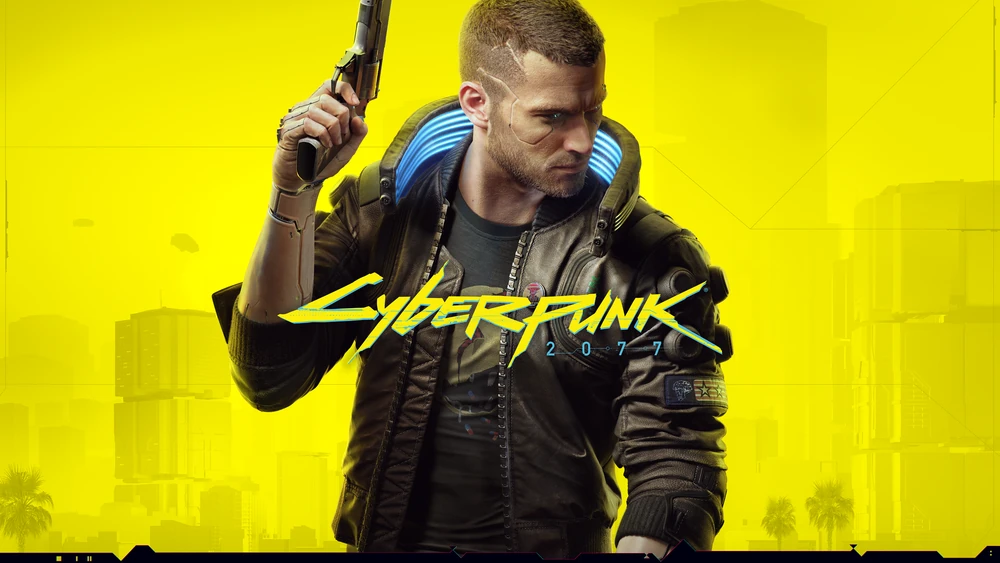

Najlepsze gry komputerowe
Wiedźmin 3: Dziki Gon

Wiedźmin 3: Dziki Gon to popularna gra fabularna osadzona w świecie fantasy. Gra oferuje otwarty świat, epicką historię oraz zaawansowany system walki.
Grand Theft Auto V

Grand Theft Auto V to sandboxowa gra akcji, w której gracz może eksplorować ogromny otwarty świat, prowadzić pojazdy, wykonywać misje oraz robić wiele innych rzeczy.
Cyberpunk 2077
Cyberpunk 2077 to gra RPG osadzona w futurystycznym świecie Night City. Gracz wciela się w V, płatnego mordercę, który eksploruje miasto pełne korupcji i niebezpieczeństw.
Red Dead Redemption 2

Red Dead Redemption 2 to epicka gra akcji osadzona w realiach Dzikiego Zachodu. Gracz wciela się w postać Arthur'a Morgana i odkrywa olbrzymi otwarty świat pełen przygód.
Assassin's Creed Valhalla

Assassin's Creed Valhalla to gra akcji z otwartym światem, w której gracz wciela się w wikinga Eivora. Przemierzaj Skandynawię, walcz z wrogami i rozwijaj swoją osadę.